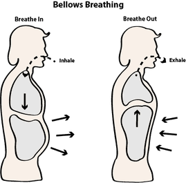
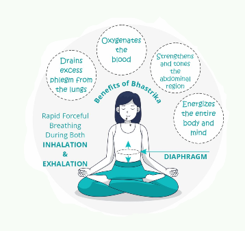

The stimulating breath or bellows breath
is a great way to boost your energy. This type of breathing
practice is often done in yoga to help increase Prana, or
life force energy.
The stimulating breath can help you increase your energy
and help you be more alert. The bellows breath is a safe
practice, but it could make you dizzy initially until
your body gets used to the increased energy.
Strive for no more than 15 seconds or so on your first
try, working up to a minute. Each time you practice this
breath, you can increase your time little by little.
style 01

10. Sit up tall with your best posture with your back and neck straight and aligned.
9. Consciously relax your shoulders, neck, and forehead.
8. Take a few deep but relaxed breaths—expand your belly fully as you breathe.
7. Keep your mouth closed and breathe through your nose.
6. To begin Bellows Breath, exhale forcefully through your nose.
5. Then inhale forcefully through your nose.
...
to do
This energizing breathing practice is great any time that you want a boost or to get your blood pumping.
 Before a workout or yoga session.
Before a workout or yoga session.
It's best not to do this breathing exercise right before
bed as it tends to invigorate your mind and make it
harder to fall asleep.
Bellows breath may make you dizzy until you become used
to the technique. It is not recommended to
practice it if you are pregnant, have high blood pressure,
poor lung capacity, epilepsy, seizures,
or an abdominal hernia.
1.Supports Dosha balancing: The proper technique of Bellows Breath forms the balancing agent, harmonizing the three doshas of a body, viz, Pitta, Vata, and Kapha. ...

2.Boosts mental health: When we consider Bhastrika Pranayama benefits for brain,
following the correct steps supports
and balances the parasympathetic nervous system and autonomic nervous system.
3.Energizes mind and body: This yoga is the natural way to vitalize one's mind
and body. Whether you are physically strained or mentally low, revitalize your
body through Bhastrika Pranayama benefits.
4.Good for lungs: People suffering from respiratory disorders like allergies,
cold, breathlessness, and flu must try this yoga. It clears the air passages
and strengthens the lungs.